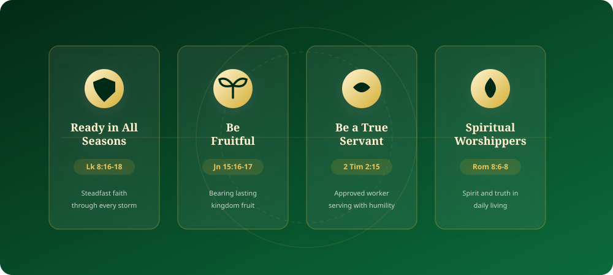

Ministry Model & Mandates
Guided by the Word of God, establishing believers and raising true worshippers.

Our Heart & Mission
The Harvester is a welcoming community for all nations. We are a ministry driven by a passion to see every individual experience the saving grace of Christ and live with eternal purpose.
We are dedicated to helping everyone discover their identity in God, develop spiritual gifts, maximize potentials, and fulfill their divine calling.
Our Vision
To see the manifestation of the power of God raising a generation of true worshippers.
As a purpose-driven community, we proclaim the Gospel of Jesus Christ with clarity and conviction, leading lives out of darkness into His marvelous light.
Our Mandates
Four core biblical pillars that guide our spiritual walk and ministry execution:
- Be ready in all seasons (Luke 8:16-18)
- Be fruitful (John 15:16-17)
- Be a true servant (2 Timothy 2:15)
- Be spiritual worshippers (Romans 8:6-8)
Join Us on the Journey
Whether you are exploring faith or seeking a home church to grow and serve, there is a place for you here.